1
这种题怎么做? 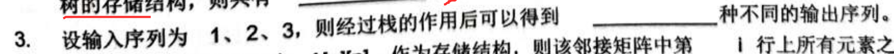 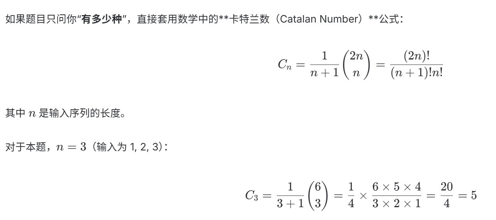
本版保持 谨记.md 原文顺序和原文表述，不提炼、不改写、不合并；只把文字、公式、代码块和图片整理成更适合阅读的 HTML 笔记。PPTX 图片笔记按页附在后面。
这种题怎么做?  
二分查找:mid是向下取整. 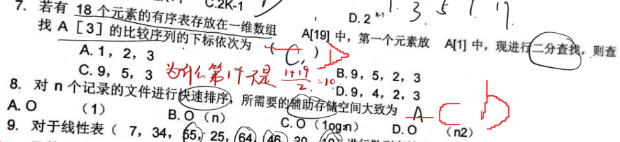
另外注意, 快速排序一趟和全部的空间复杂度的区别
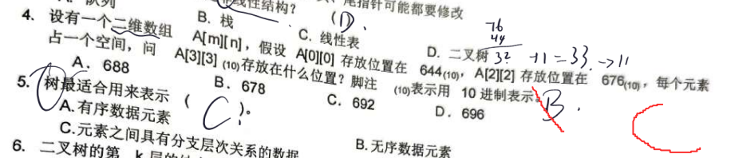
先求出来列数 再数格子即可, 一个格子是一个位置
队列中:
头指针:先插入的元素所在位置
尾指针:后插入的元素所在位置
注意：试卷上铅笔写的答案（最坏 $O(n)$，平均 $O(\log_2 n)$）是错误的。请千万不要这样记忆。
快速排序的核心思想是分治法：每次选一个“基准元素（Pivot）”，把比它小的放左边，比它大的放右边，然后递归。
这道题包含两个空格，考察的是二叉树的两个经典定理。
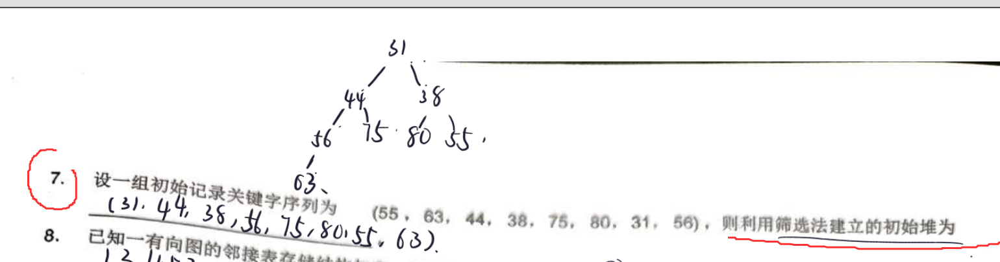
我建立的堆为什么不对?
这是一个在学习数据结构时非常经典且容易混淆的错误。
你建立的堆之所以不对，是因为你使用了“逐个插入法”（Insertion Method），而题目要求的是使用“筛选法”（Sifting/Filtering Method，也称自底向上建堆法）。
虽然你最后画出的二叉树确实是一个合法的最小堆，但建堆的过程和方法错了，导致最终得到的序列顺序与标准答案不一致。
如果我们把原始序列 (55, 63, 44, 38, 75, 80, 31, 56) 按照一个接一个插入到空堆中的方式：
…… 依此类推。
这样最终确实会得到你写的序列：(31, 44, 38, 56, 75, 80, 55, 63)。但这不是筛选法。
筛选法的核心是：先将所有初始数据直接排成一棵完全二叉树，然后从“最后一个非叶子结点”开始，自底向上、往下方进行筛选调整。
我们以建立最小堆为例，演示正确的筛选法步骤：
按照原始序列 (55, 63, 44, 38, 75, 80, 31, 56) 的顺序，直接填入二叉树中（括号内为数组下标）：
55 [1]
/ \
63 [2] 44 [3]
/ \ / \
38 [4] 75 [5] 80 [6] 31 [7]
/
56 [8]总节点数 $n = 8$，最后一个非叶子结点的下标为 $\lfloor 8/2 \rfloor = 4$，即值为 38 的结点。我们从这个结点开始，倒序（下标从 4 到 1）进行向下筛选。
55
/ \
63 31
/ \ / \
38 75 80 44
/
56 55
/ \
38 31
/ \ / \
56 75 80 44
/
63 31
/ \
38 44
/ \ / \
56 75 80 55
/
63按层次遍历最终树，正确的初始堆序列为：
$$\mathbf{(31, 38, 44, 56, 75, 80, 55, 63)}$$
*(对比你的答案 31, 44, 38...，可以看到根结点的左右孩子顺序正好反了，这就是因为调整根结点 55 时，它必须与更小的右孩子 31 交换，从而保留了左孩子 38，而你通过插入法把 44 挤到了左边)*
如果学校教材默认是用最大堆，用同样的筛选法步骤，最后得到的序列应为：
$$\mathbf{(80, 75, 55, 56, 63, 44, 31, 38)}$$
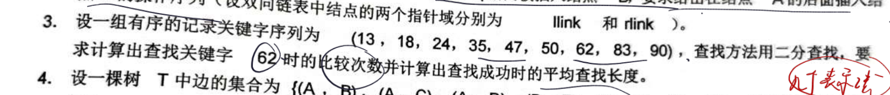
注意ASL怎么算即可. ASL = (1\*1 + 2\*2 + 3\*4 + 4\*2)/9
生成树? 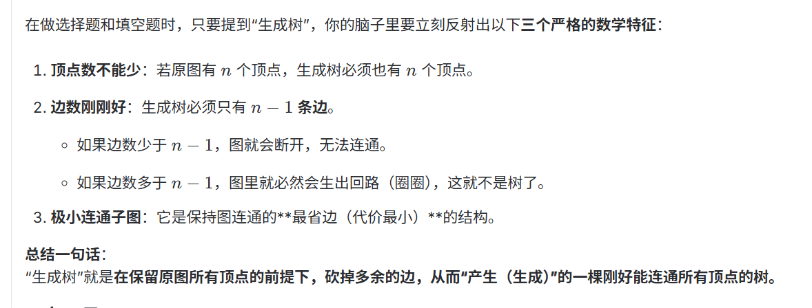
整棵树的总结点数 $N$，是所有不同度数结点数的总和：
$$N = N_0 + N_1 + N_2 + N_3 + \dots + N_m$$
除了根结点外，树中的每一个结点上方都对应着唯一的一条边（指向它的双亲）。所以总边数 $B$ 为：
$$B = N - 1$$
边是由每个结点向下发射出来的。
所以，总边数 $B$ 还可以表示为：
$$B = 0 \cdot N_0 + 1 \cdot N_1 + 2 \cdot N_2 + 3 \cdot N_3 + \dots + m \cdot N_m$$
简化后为：
$$B = N_1 + 2N_2 + 3N_3 + \dots + m \cdot N_m$$
因为两种方法算出来的总边数 $B$ 必须相等，所以：
$$(N_1 + 2N_2 + 3N_3 + \dots + m \cdot N_m) = N - 1$$
我们将第一步的 $N = N_0 + N_1 + N_2 + \dots + N_m$ 代入等式右边：
$$N_1 + 2N_2 + 3N_3 + \dots + m \cdot N_m = (N_0 + N_1 + N_2 + N_3 + \dots + N_m) - 1$$
现在，我们把等式两边相同的项消掉（两边同时减去 $N_1 + N_2 + N_3 + \dots + N_m$）：
最后得到的通用定理公式为：
$$N_0 - 1 = N_2 + 2N_3 + 3N_4 + \dots + (m-1)N_m$$
移项整理，得到叶子结点数 $N_0$ 的通用表达式：
$$\mathbf{N_0 = 1 + \sum_{i=2}^{m} (i - 1)N_i}$$
我们把具体数值代入进去看，就会发现它非常工整：
考前记忆窍门：
度数为 $i$ 的结点，它对叶子结点的“贡献权重”就是 $(i-1)$。你只需要记住每个结点的系数是 “它的度数减 1”，最后再统一加上最开始的根结点（那额外的 $+1$）即可。
在数据结构考试中，求解最小生成树（Minimum Spanning Tree, MST）最经典且最常考的算法有两个：普里姆（Prim）算法和克鲁斯卡尔（Kruskal）算法。
界园志异说: 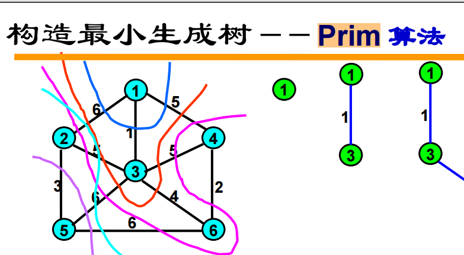 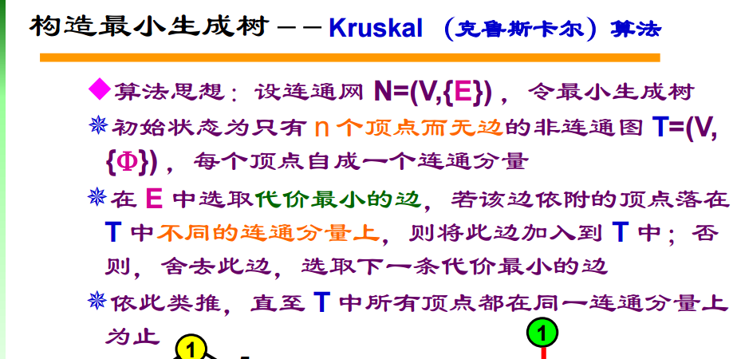
二叉排序树结点的删除:
在二叉排序树（BST）中删除一个结点，其核心规则是：删除该结点后，整棵树必须依然保持二叉排序树的性质（即：任意结点的左子树中所有结点的值 < 该结点的值 < 其右子树中所有结点的值）。
为了实现这一点，删除操作通常根据被删除结点的子树数量，分为以下 三种情况：
NULL，然后释放该结点的内存。标准步骤（以选择“后继”为例）：
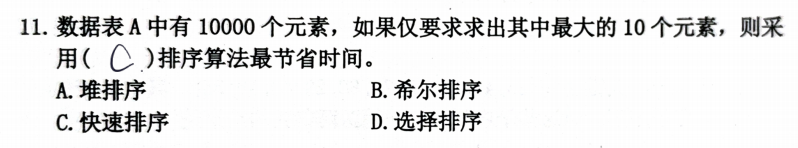 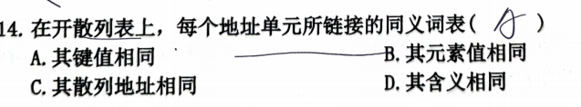
这组题（第 6 题到第 15 题）你做得非常好，绝大多数都答对了！
有 1 道题确定做错（第 11 题），还有 1 道题的手写字母有些模糊（第 14 题），可能是个高频易错坑。
下面是详细的批改和解析：
14 和 25 是不同的键值（所以 A. 其键值相同 是错的），但它们的散列地址都是 3（$14\%11 = 3$，$25\%11 = 3$）。3 后面的拉链表（同义词表）中。因此，它们的散列地址相同（选 C）。队列允许插入的一段称为队尾 允许删除的一端称为队头
后缀表达式处理括号与指数:指数转化为^运算符,括号自己安排顺序即可
平衡二叉树的旋转操作
这个方法不需要你脑补任何旋转动作，只需要做大小排序。
因为无论怎么旋转，二叉排序树的本质不会变：左子树 < 根结点 < 右子树。
对于任何失衡的三个关键结点（失衡结点、它的孩子、它的孙子），它们一定能排出一个“老大、老二、老三”的顺序。
旋转的终极目标，就是把“老二（中间值）”提拔为新根，老大放右边，老三放左边。
以你的题目为例，失衡处的三个结点是：G、F、E：
F 是 G 的右孩子，E 是 F 的左孩子，我们可以得出它们的大小关系是：E 是中间值（老二）。E 成为新根，小的 G 放左边，大的 F 放右边。原结构 (RL型)： 秒杀结果：
G (小) E (中)
\ / \
F (大) G(小) F(大)
/
E (中)不论是 LL、RR、LR 还是 RL，这个“提拔中间人”的规则 $100\%$ 适用，考场上用它来画最终结果，只需 3 秒钟。
如果你在考试中被要求写出“旋转过程的文字描述”，可以用下面这个物理模型来记忆：
我们将失衡的形状分为两种：“直线型” 和 “折线型”。
想象这三个结点是一根挂在空中的绳子。
(根) A (提拔B，A往右下坠) B
/ / \
B <-- 捏住这里提上去 C A
/
C折线型因为“打折”了，没法直接提。必须分两步：
G -> F -> E，往右再往左折）为例：F -> E 是弯的，我们先揪住最底下的 E 往右边一拽，把它拉直成一条直直向右的线（G -> E -> F）。 G G
\ 拉直下半部分 \
F --------------> E
/ \
E F (拉直成了标准的 RR 型)G -> E -> F，一路向右倾斜）。E 往上一提，原来的根 G 顺势向左下坠。 G E
\ 捏住E上提，G左下坠 / \
E ---------------------> G F
\
F在考场上，单纯靠“人脑模拟代码流程”确实极其容易想歪。因为递归的调用栈很深，大脑在模拟回溯时负担很重，一旦在某个结点上直觉先行（比如觉得这棵树深度是4，而算出的数刚好也是4），就会陷入“证实偏差”，后面怎么看都觉得它是求深度的。
其实，阅读二叉树的递归算法有非常强烈的“代码特征码（套路）”。不需要人脑模拟，只需掌握 “三步看穿法”，就能一眼识破算法的真实意图。
拿到代码，先不看具体的 if-else，直接找 f(left) 和 f(right) 之间是用什么连起来的：
+ $\rightarrow$ 一定是“计数”或“求和”类算法。max（或 >? 或 三目运算符比较大小） $\rightarrow$ 一定是“求高度/深度”或“求最值”类算法。&& 或 || $\rightarrow$ 一定是“判断/判定”类算法。> 考场应用：这道题一看到 f42(left) + f42(right) 里的 +，在 1 秒钟内就应该排除“求深度”的可能，判定它是在“数个数”。
既然大方向是“数个数（计数）”，那它数的是什么结点的个数？直接去代码里找 +1 发生在哪里（哪个 if 语句触发了 +1）：
二叉树只有三种结点的指标最常考：
!root->left && !root->right(left && !right) || (!left && right)root->left && root->right+1（即 return d + 1 始终执行）root->data == x> 考场应用：这道题代码里写着 if (tree->left && tree->right) return d + 1;，显然符合第 3 条。
看第一行：if (!tree) return 0;。
0。\
先序 中序 后序 知道哪几个可以确定该二叉树?
在数据结构考试中，这是一个非常经典的高频核心考点。
一句话死记硬背的黄金法则：“必须包含中序遍历，才能唯一确定一棵二叉树。”
只要有中序，搭配另外任意一个遍历，就可以唯一确定一棵二叉树。
如果考卷上出现大题让你解释为什么，或者考查概念，你只需要画出下面这个最极端的 2 结点反例：
假设一棵树有 A、B 两个结点：
B 是 A 的左孩子）： A
/
BA BB AB 是 A 的右孩子）： A
\
BA BB A这两个二叉树的先序和后序完全一模一样，但一个是左斜树，一个是右斜树，形态完全不同。所以，只有先序和后序是无法确定唯一的二叉树的。
（*注：先序决定了“谁是根”，而后序决定了“谁是子树”，但它们都没法区分这个子树到底是“左子树”还是“右子树”；只有中序能用左、右关系强行把它们划分开来。*）
求最短路径两大算法: Djikstra Floyd
为了让你在考试中能够流畅地写出大题的每一步步骤（比如手动填表、画出状态转移过程），下面我们不作对比，纯粹从算法的“执行流程（状态变化）”来精细拆解这两个算法。
Dijkstra 的核心流程可以概括为：“选矮子 $\to$ 锁死它 $\to$ 借它搭桥往外探”。
在执行过程中，算法必须维护三个数组：
dist[i]：源点（起点）到顶点 $i$ 的当前已知最短距离。s[i]：标记数组（布尔值），true 表示顶点 $i$ 的最短路径已经确定锁死；false 表示还在探索中。path[i]：前驱数组，记录到达顶点 $i$ 的前一个顶点（用来输出最终路径）。dist[v_0] 设为 0，s[v_0] 设为 true（直接锁死）。dist[i] 初始化为：dist[i] = 边权值。dist[i] = ∞。s[i] 设为 false。在未锁死的顶点（即 s[i] == false）中，进行以下操作：
dist[i] 值最小的顶点 $u$。（俗称“找目前离起点最近的未确定点”）。s[u] = true。（此时，$v_0$ 到 $u$ 的最短路径已焊死，后面绝不更改）。dist[u] + 边 weight(u, v) 的权值。dist[u] + weight(u, v) < dist[v]：dist[v] = dist[u] + weight(u, v)；path[v] = u（表示到 $v$ 的路现在要经过 $u$）。当所有的顶点都被锁死（s 全部为 true），算法结束。此时的 dist 数组就是源点到所有点的最短距离。
Floyd 的核心流程可以概括为：“插点法”。它通过逐个引入中间结点来不断刷新任意两点间的距离。
Floyd 算法整个执行过程中都在更新两个 $N \times N$ 的矩阵：
0（自己到自己）。∞。算法进行 $N$ 轮迭代。在第 $k$ 轮迭代中（$k$ 从 $0$ 变到 $N-1$），我们要允许顶点 $v_k$ 作为中转站。
这时的代码结构是经典的三重循环：
for (int k = 0; k < N; k++) { // 外层：必须是允许插入的中间点 vk
for (int i = 0; i < N; i++) { // 中层：起点 vi
for (int j = 0; j < N; j++) { // 内层：终点 vj
// 核心判断：如果经过 vk 中转比原来的直达更近
if (D[i][k] + D[k][j] < D[i][j]) {
D[i][j] = D[i][k] + D[k][j]; // 刷新距离
P[i][j] = k; // 记录中间中转点
}
}
}
}假设图有 A, B, C 三个点：
dist[u] 之后，在下一步更新邻居前，一定要写明将 $u$ 加入到 S 集合中。有很多同学光顾着改数值，忘了写 s[u]=true。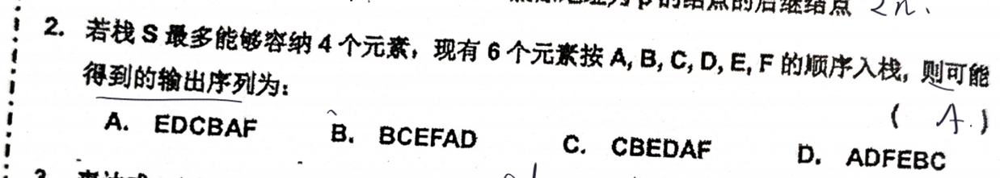
栈居然有最大容量上限 这个选C才是对的
简单选择排序:直接交换 插入排序:插入,不是交换位置
栈算法计算拓扑序列: 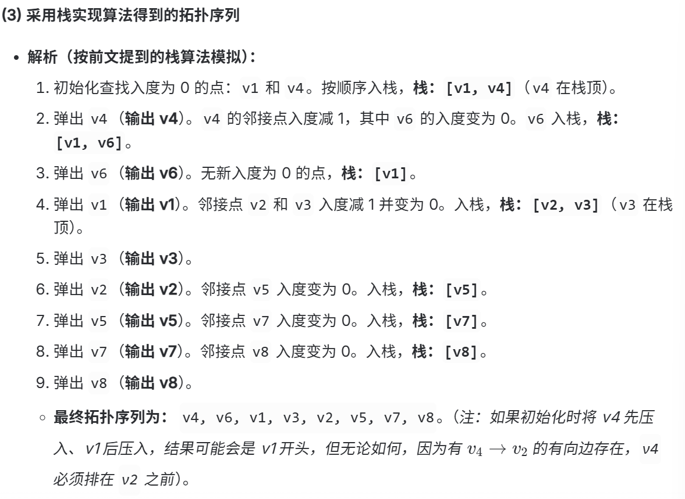
循环队列: 元素个数: (rear-front+m)%m
判断队列满:(rear+1)%m = front
查找方法对比
| 查找分类 | 查找方法 | 平均时间复杂度 (ASL) | 最坏时间复杂度 | 辅助空间复杂度 | 存储结构与前提条件 | 优缺点及适用场景 |
|---|---|---|---|---|---|---|
| 静态查找 | 顺序查找 | $O(n)$<br>*(成功时 $ASL \approx \frac{n+1}{2}$)* | $O(n)$ | $O(1)$ | 顺序表或链表均可；<br>对元素是否有序无要求。 | 算法最简单，但效率低；<br>适用于表长较小或无序的线性表。 |
| 静态查找 | 折半查找 *(二分查找)* | $O(\log_2 n)$<br>*(成功时 $ASL \approx \log_2(n+1)-1$)* | $O(\log_2 n)$ | $O(1)$<br>*(递归时为 $O(\log_2 n)$)* | 必须采用顺序存储（数组）；<br>元素必须按大小有序排列。 | 查找速度极快；<br>但不适合频繁插入和删除（因为要维护有序性）。 |
| 静态查找 | 分块查找 *(索引顺序查找)* | $O(\sqrt{n})$<br>*(均匀分块且两级均顺序查找时，最佳 $ASL \approx \sqrt{n}+1$)* | $O(b+s)$<br>*($b$为块数，$s$为块内元素数)* | $O(b)$<br>*(需要额外建立一个大小为 $b$ 的索引表)* | “块间有序，块内无序”；<br>索引表必须有序，块内可无序。 | 折中方案。既有较快的查找速度，<br>又比较方便进行块内的插入和删除。 |
| 动态查找 | 二叉排序树 (BST) | $O(\log_2 n)$ | $O(n)$<br>*(当树退化为单支树/链表时)* | $O(1)$<br>*(递归时为 $O(h)$， $h$为树高)* | 二叉链表存储。 | 插入和删除非常快（无需移动大量元素）；<br>但查找性能不稳定，受输入序列顺序影响极大。 |
| 动态查找 | 平衡二叉树 (AVL) | $O(\log_2 n)$ | $O(\log_2 n)$<br>*(通过旋转强制维持树高平衡)* | $O(1)$<br>*(递归时为 $O(\log_2 n)$)* | 二叉链表存储（结点需记录平衡因子）。 | 查找性能极高且非常稳定；<br>但在插入和删除时，需要通过旋转来维护平衡，有额外开销。 |
还有个哈希查找, 时间复杂度为O(1).
一些B-树:
*(极高频考点，记公式)*
| 结点类型 | 关键字（数字）个数范围 | 孩子（分叉）个数范围 |
|---|---|---|
| 根结点 | $1 \sim m-1$ | $2 \sim m$ |
| 非根/非叶结点 | $\lceil m/2 \rceil - 1 \sim m-1$ | $\lceil m/2 \rceil \sim m$ |
*(5阶B树速算示例：$\lceil 5/2 \rceil = 3$。非根结点关键字范围为 $[2, 4]$ 个，孩子范围为 $[3, 5]$ 个。)*
AOE网中的关键路径:它是从起点到终点“耗时最长”的路径，但它决定了整个项目“最快能完工”的时间（即最短工期）。
*luminous*
定义一个抽象数据类型 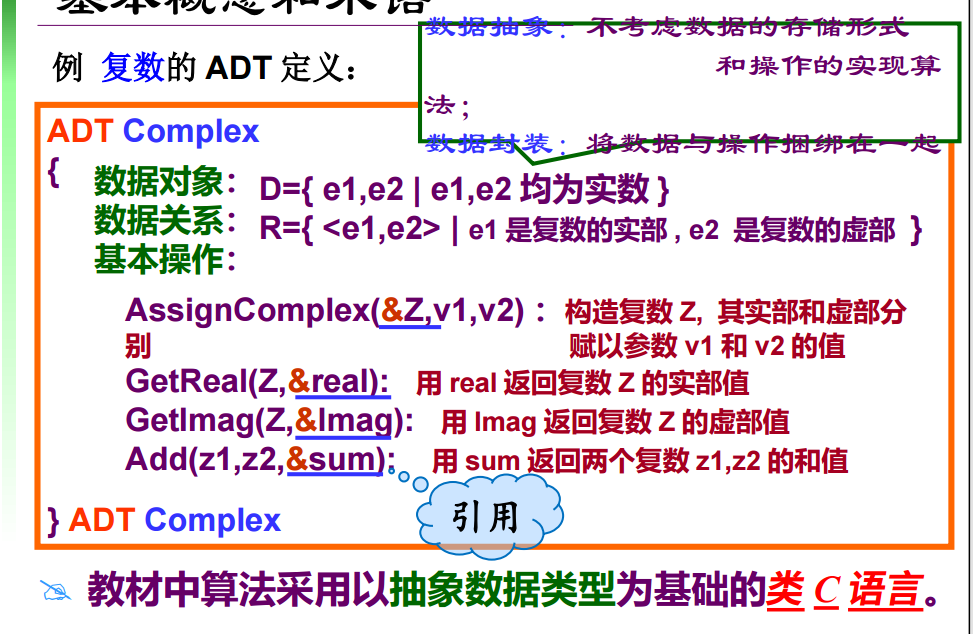
ADT需要有哪些功能? 满足"生死读写"的功能,再根据结构特点调整功能即可,比如栈的push pop,线性表getidx
循环队列队满:(r + 1)%m = f
队空: r=f
循环队列元素个数: (r - f + m) % m
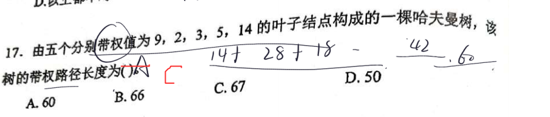
画出树的结构如下：
(33)
/ \
14 (19)
/ \
9 (10)
/ \
5 (5)
/ \
2 3*(注：圆括号内为非叶子结点，其余为叶子结点)*
14 的层数（路径长度）为 1 $\rightarrow 14 \times 1 = 14$9 的层数（路径长度）为 2 $\rightarrow 9 \times 2 = 18$5 的层数（路径长度）为 3 $\rightarrow 5 \times 3 = 15$2 的层数（路径长度）为 4 $\rightarrow 2 \times 4 = 8$3 的层数（路径长度）为 4 $\rightarrow 3 \times 4 = 12$$$\text{WPL} = 14 + 18 + 15 + 8 + 12 = 67$$
在哈夫曼树中，带权路径长度（WPL）等于所有非叶子（分支）结点的权值之和。
我们只需把合并过程中产生的所有新结点（非叶子结点）相加即可：
5101933$$\text{WPL} = 5 + 10 + 19 + 33 = 67$$
hash表处理冲突的几种方法: 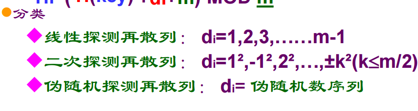 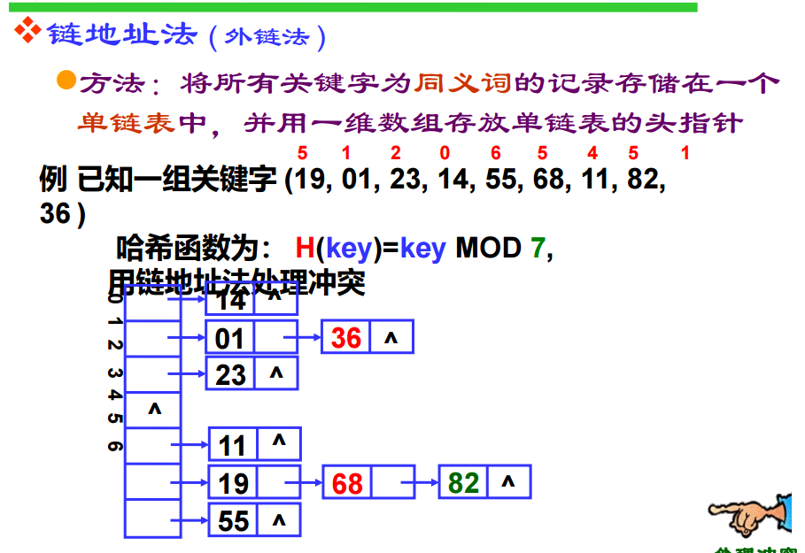
算法可以没有输入 但是必须有输出
还是旋转:太理解了！教科书上那种“以某某为轴左旋转”、“顺时针/逆时针”的说法确实非常反人类。考试时间本来就紧，在草稿纸上转来转去极易转晕、转错。
为了明天顺利通关，我教你一套根本不需要任何空间想象力、纯靠大小排序的“傻瓜式解题大招”。
这套方法叫：“中间数提拉法”。
不管是什么 LL、RR、LR、RL，导致树不平衡的永远只有三个结点：
比如你刚才错的那一步，这三个结点就是：7、5、6。
把这三个数按大小排个序：
$$5 < 6 < 7$$
所以，最后的平衡形态必定是：
6
/ \
5 7不需要想象任何旋转，直接按大小把中间的数提上去就行了！
如果是 LL 型或 RR 型（本来就是一条直线），是不需要中间状态的，一步到位。
只有 LR 型和 RL 型（折线型）才需要画出中间状态。
怎么画中间状态？同样不需要想象，直接记公式：
最大 (7)
/
中间 (6)
/
最小 (5)*(你刚才就是这里画错了一条线的方向，只要记住 LR 的中间态一定是“纯左斜线”即可。)*
最小 (5)
\
中间 (6)
\
最大 (7)考试时，有时这三个结点底下还挂着别的子树。
旋转完之后，这些子树该挂在哪里？
比如，6 升级当了老大，5 变成了 6 的左孩子，7 变成了 6 的右孩子。
6 还有一个左子树 $T_1$，因为 $5 < T_1 < 6$，所以 $T_1$ 只能挂在 5 的右边。6 还有一个右子树 $T_2$，因为 $6 < T_2 < 7$，所以 $T_2$ 只能挂在 7 的左边。中 在上，小 在左，大 在右。用这套方法，闭着眼睛都能写对，今晚可以睡个好觉了！
有向无环图的关键路径的算法设计思路: 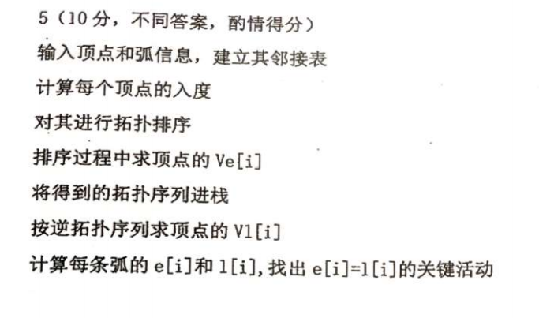
n个结点的无向图中:
使该图可以成为连通图的最小边数: n-1 即构建一个树
使该图必然连通的最小边数: $(n-1)(n-2)/2 + 1$
线索二叉树 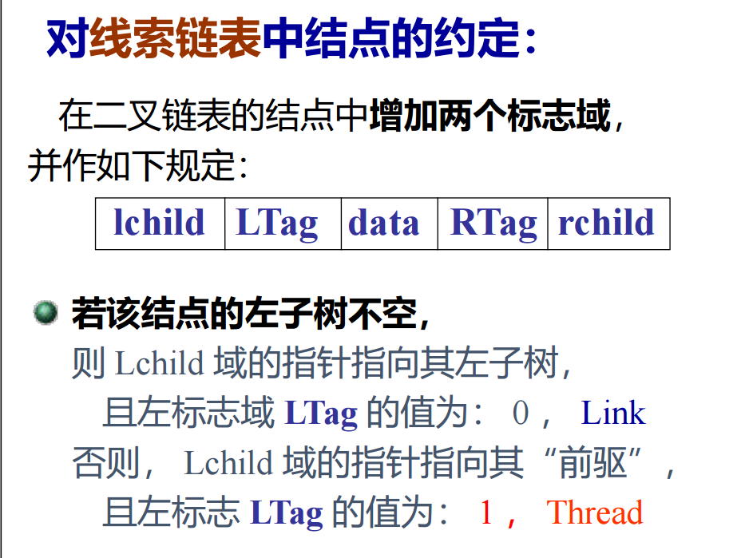
判断序列是不是堆? 计算下标即可. 2i 2i+1
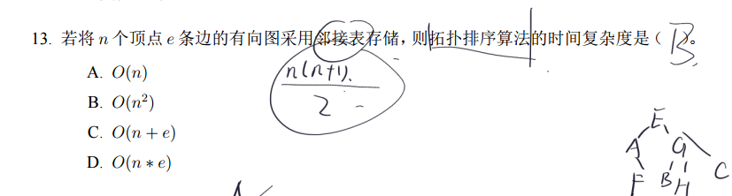
答案应为C
希尔排序的流程概述
答案：完全没有任何影响。分组依然正常进行，只不过有的组会多一个数，有的组会少一个数。
在希尔排序中，组与组之间的元素个数不一定非要相等。
假设有 10 个元素（下标 0 ~ 9），增量 $d = 3$（10 显然不能被 3 整除）。
我们依然每隔 3 个数划分为一组：
操作方法一模一样：
所以，不能整除是常态，不用担心，直接无脑往后数 $d$ 个隔空取数即可。
希尔排序之所以叫“缩小增量排序”，就是因为它的增量 $d$ 是每趟都在缩小的，直到最后一趟 $d=1$ 为止。
在期末考试中，增量序列通常有两类给法：
最容易犯错的考点：第二趟排序，必须在第一趟排序出来的“新序列”基础上进行，绝对不能用原序列！
流程如下：
以下内容从 谨记.pptx 内嵌图片中按页提取；未改写内容。